THE SRI LANKA COLLECTION
Places worth
the journey.
Coastal mornings, ancient cities and tea-country trails. Find your next stop, and let us take care of the journey.
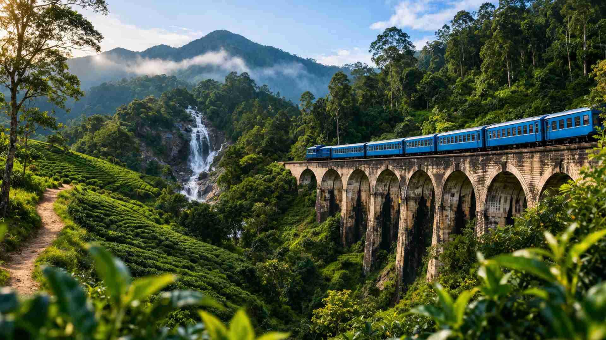
01 / THE HILL COUNTRYIN FOCUS
Ella
Misty mountains, tea trails and the iconic Nine Arch Bridge.
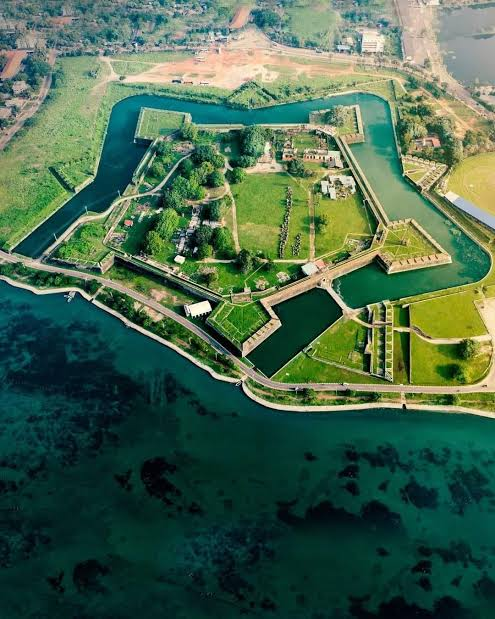
culture & heritageJaffna
01Discover the northern peninsula through historic streets, coastal views and distinctive local culture.
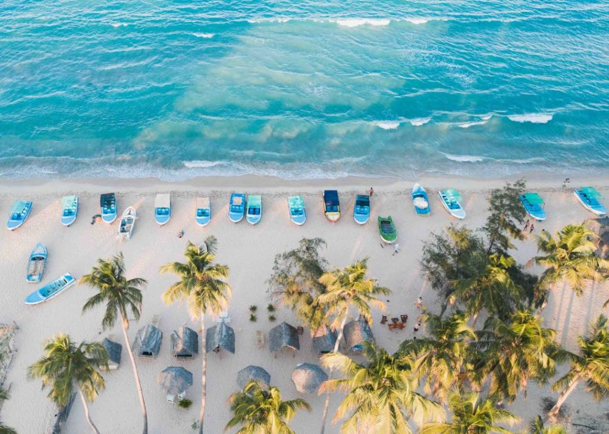
coastal escapesTrincomalee
02Turquoise water, palm-lined beaches and coastal journeys around the east coast.
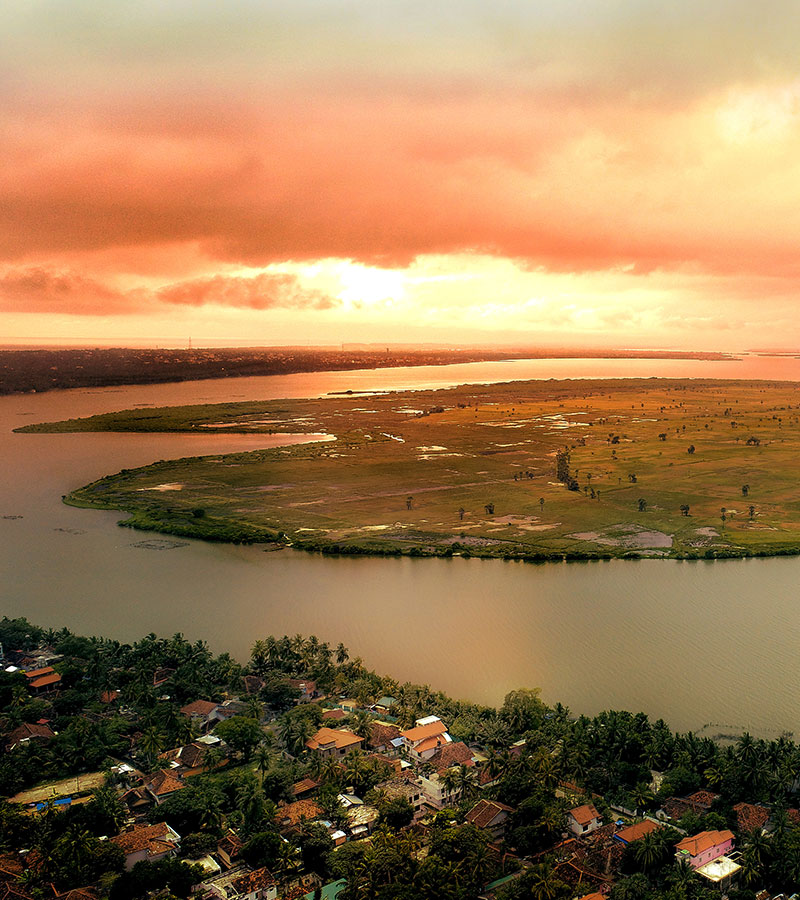
coastal escapesBatticaloa
03Golden lagoon sunsets, peaceful waterfronts and a relaxed introduction to the eastern coast.
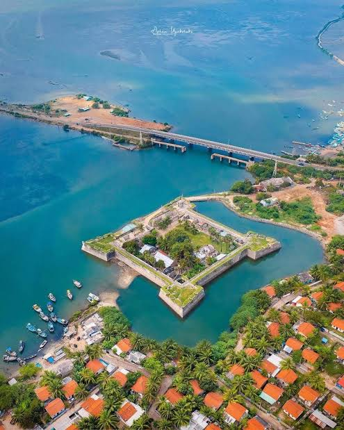
culture & heritageMannar (Mannaram)
04Explore an island landscape of historic fort walls, open lagoons and quiet coastal roads.
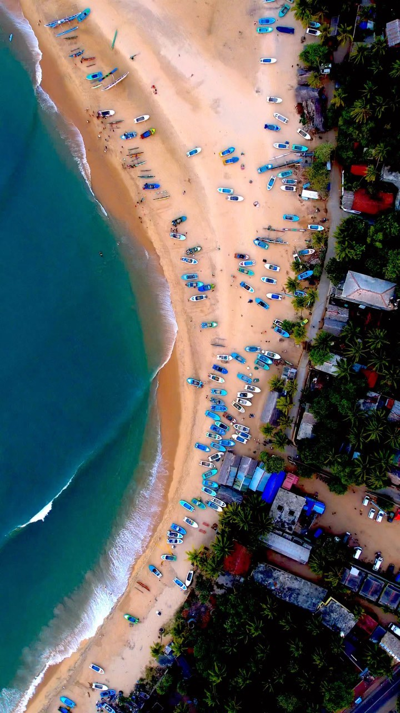
coastal escapesArugam Bay
05Surf breaks, colourful fishing boats and easy days on Sri Lanka’s east coast.
Ella
06Misty mountains, tea trails and the iconic Nine Arch Bridge.
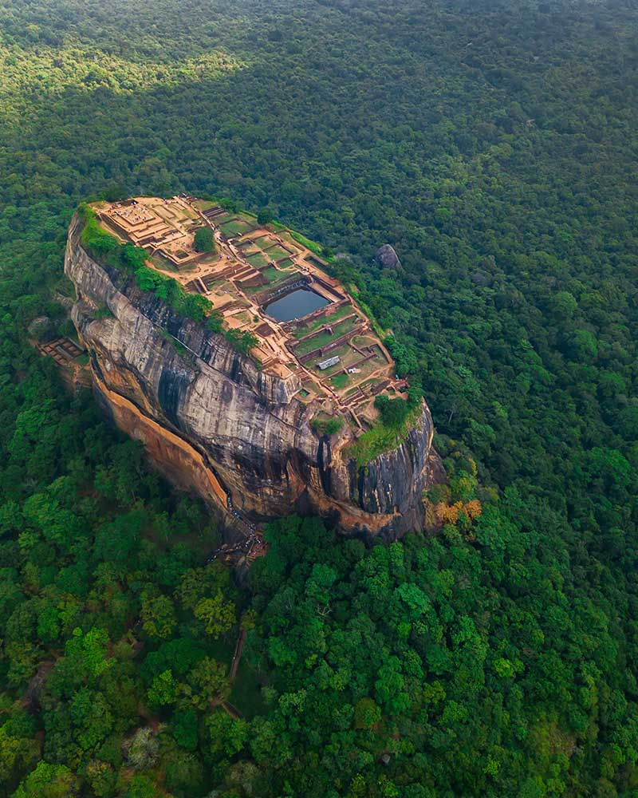
culture & heritageSigiriya
07Ancient wonders rising above a sea of green.
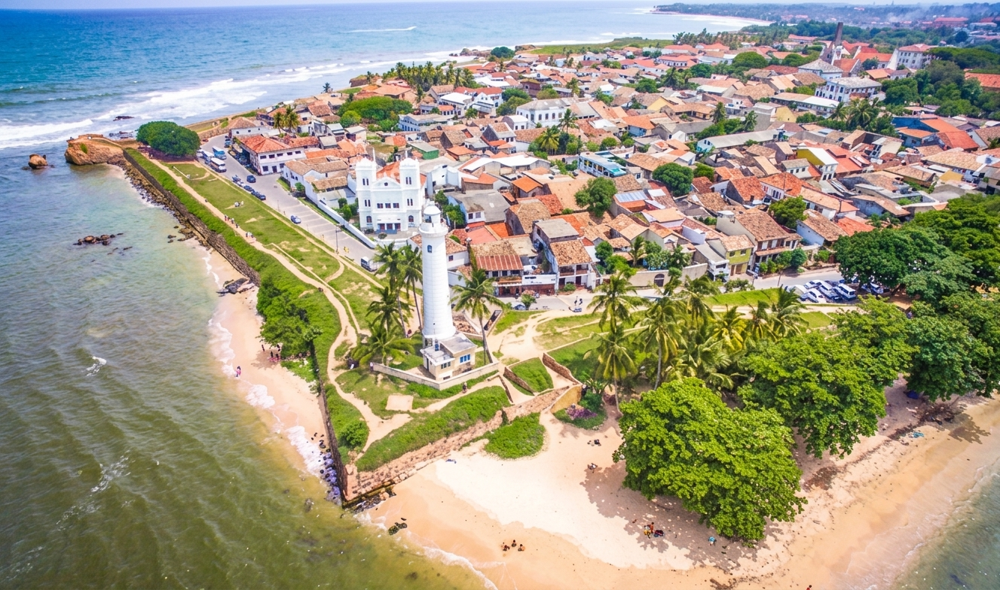
coastal escapesGalle
08Wander the fort, follow the ocean and slow down.
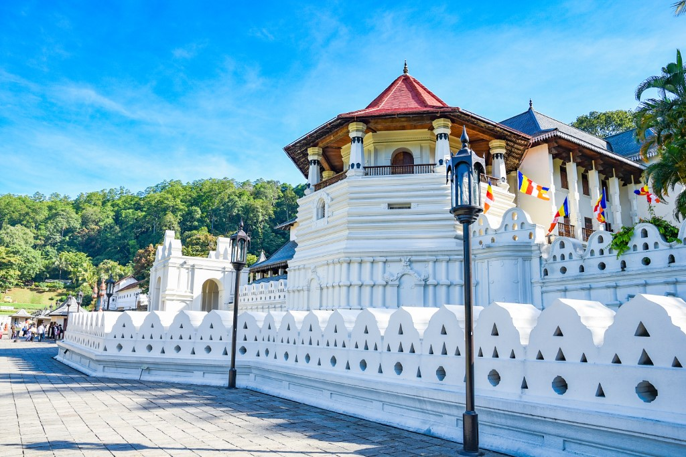
culture & heritageKandy
09A lakeside city at the gateway to the hill country.
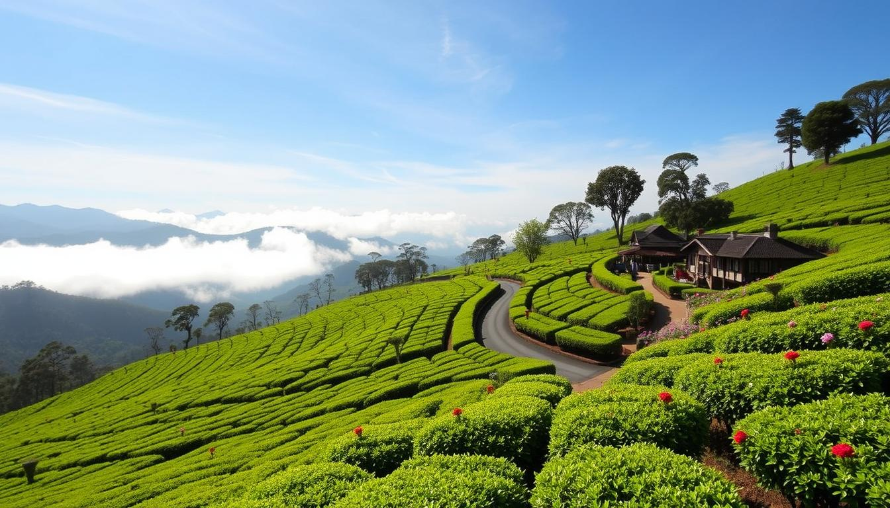
hill countryNuwara Eliya
10Cool mountain air and rolling tea estates.
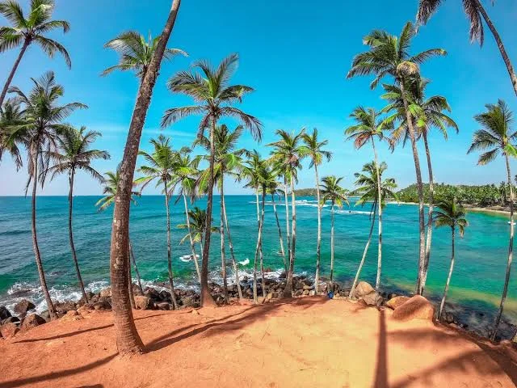
coastal escapesMirissa
11Palm-fringed bays and easy days by the Indian Ocean.
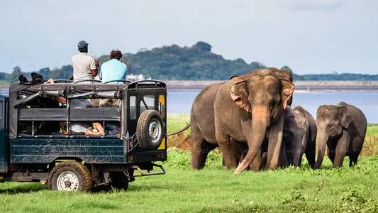
wild sri lankaYala
12Discover the island’s wild side on a safari escape.
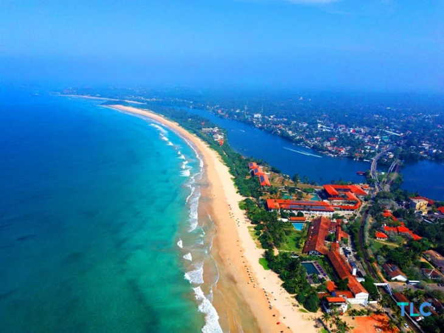
coastal escapesBentota
13Golden beaches, river adventures and a slower rhythm.
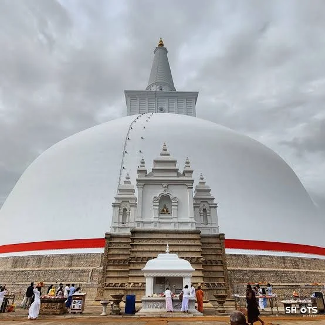
culture & heritageAnuradhapura
14Sacred stupas and stories of Sri Lanka’s ancient capital.
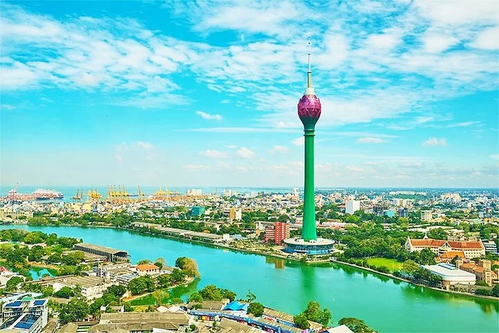
city discoveriesColombo
15A lively introduction to the island, from markets to sunset.
YOUR ISLAND GUIDE
Every destination.
One easy journey.
Discover our destinations across Sri Lanka. Choose a pin or a place to plan your ride.
15 of 15 destinations
THE BEST PART IS STILL AHEAD
Your Sri Lanka is waiting.
Let’s make the journey as memorable as the destination.